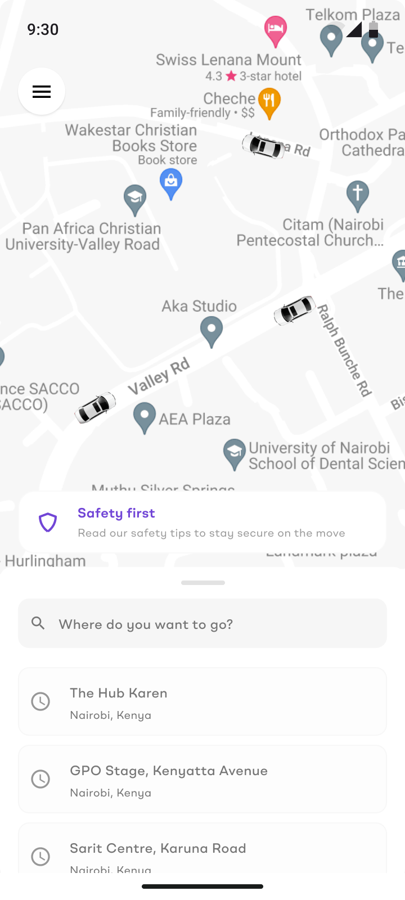
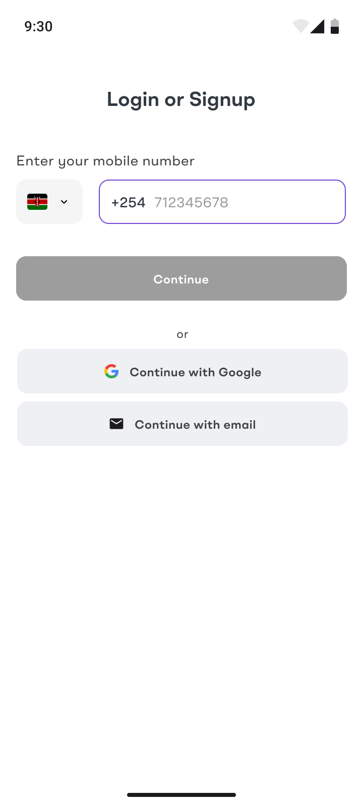
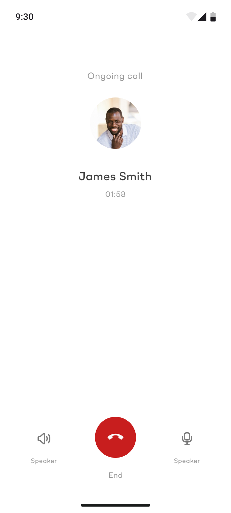
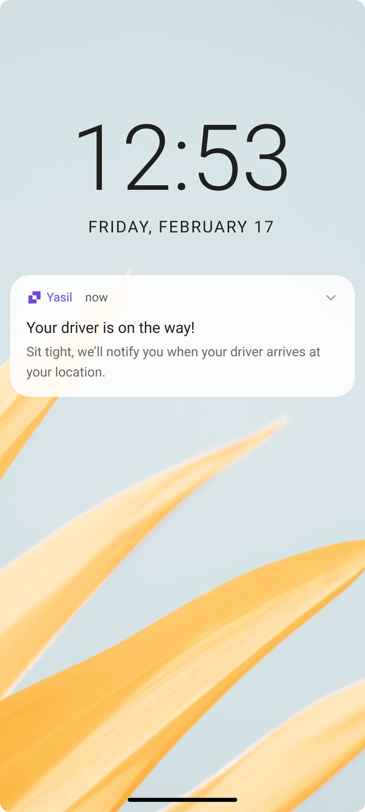
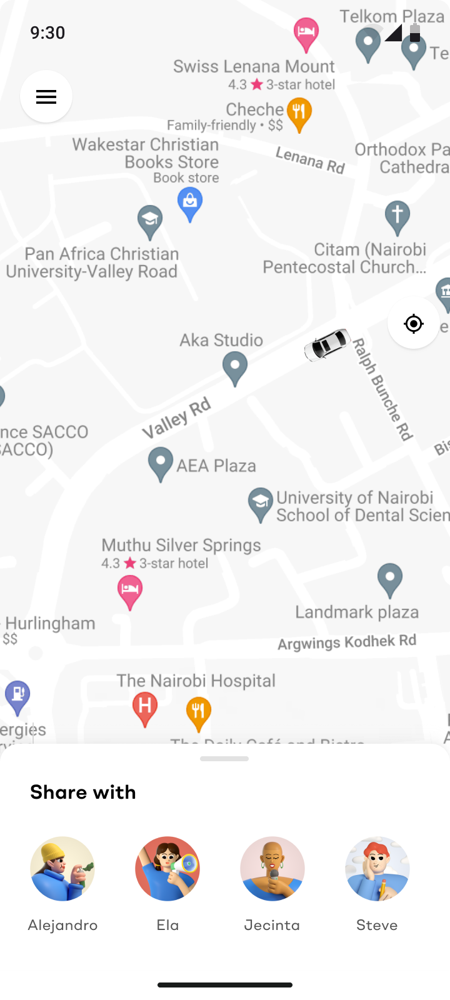

Building the safety-first ride app backwards from a trust problem.


Kenya's ride-hailing market had a real safety trust gap.
Every major platform built for volume first and safety second. Kenya's largest ride-hailing app has faced repeated public incidents: drivers suspended over assault claims, drivers going offline mid-trip to dodge tracking, and came close to losing its operating license until it committed to a multi-year safety overhaul. Corporates sending employees into that system carried real duty-of-care exposure, with no vetted, accountable alternative built for that need.
Start with corporates, not consumers.
Rather than compete on volume from day one, Yasil inverted the usual model: launch with corporate clients, where safety and driver accountability are non-negotiable, then extend that same vetted foundation to everyday riders later. Corporates already have a formal duty-of-care stake in ground transportation, so building to that bar from day one meant safety was the foundation, not a feature bolted on after incidents forced the issue.
Safety surfaced, not buried
One-tap driver calling, live ride-sharing with named trusted contacts, and an always-accessible Emergency Assistance panel, built into the ride experience itself, not tucked in a settings menu.
Continuous reassurance
Proactive "driver is on the way" notifications keep the rider informed at every stage, reducing the anxious blank space between requesting and arrival.
Vetted drivers from day one
Corporate-first meant the driver pool could be thoroughly vetted before scale, rather than vetting standards playing catch-up after growth.




The panel had to reassure, not alarm.
A real risk in designing for safety is that the interface itself starts to feel dangerous: a screen full of red buttons and warnings can make a routine ride feel like an emergency in progress. The safety panel was deliberately restrained: calm typography, a single accent color reserved for the emergency action, and copy that reads as capability ("call for emergency services") rather than alarm ("something wrong?"). The goal was a rider glancing at the panel and feeling covered, not spooked.
Where this goes next.
Consumer expansion
Carrying the same vetted-driver and safety-panel foundation into a general-market product once the corporate base is proven.
Route-level risk flagging
Surfacing known high-risk zones or times to riders and drivers alike, similar to approaches other platforms have introduced reactively.
Employer visibility
An opt-in dashboard for corporate admins to see aggregate safety patterns across their organization's trips, supporting their own duty-of-care obligations.
What this project taught me.
Going in, I assumed safety features and a smooth ride experience were in tension. I thought piling on protection would make the app feel heavier. What I learned is the opposite: when safety is designed as a felt, always-visible layer instead of a buried settings page, it becomes part of what makes the product feel premium, not burdensome. The corporate-first sequencing also reframed how I think about trust-building generally. Sometimes the fastest way to reach a broad market is to prove yourself with the audience that has the least tolerance for getting it wrong.
A trust-tested foundation, built to extend.
This was primarily a process and decisions story: proving that a safety-first, corporate-vetted foundation could work as the entry point for a ride-hailing platform, rather than a feature added in after the fact.